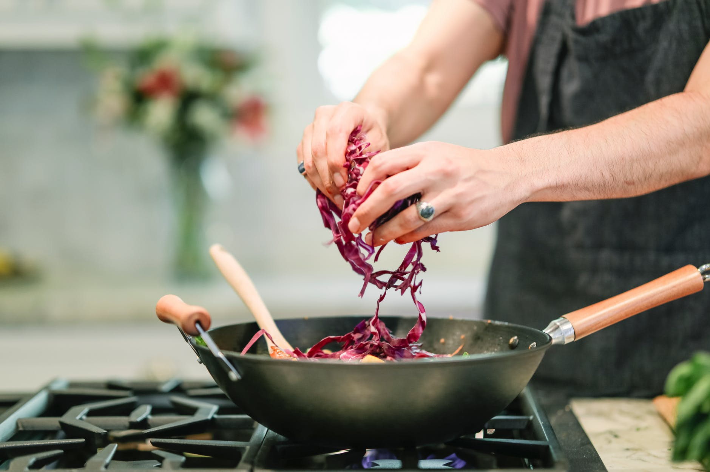
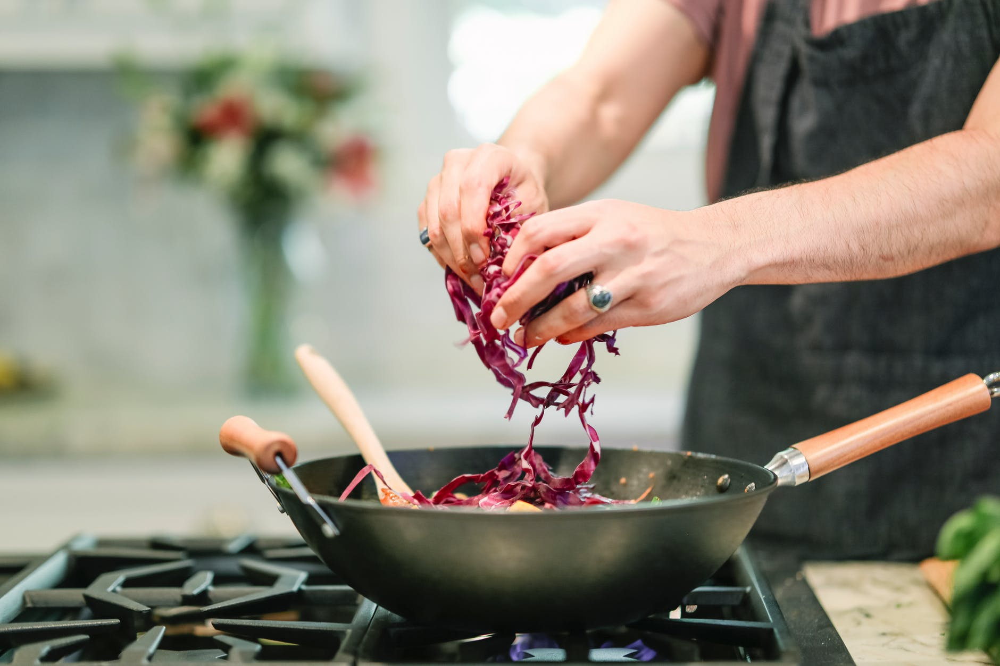
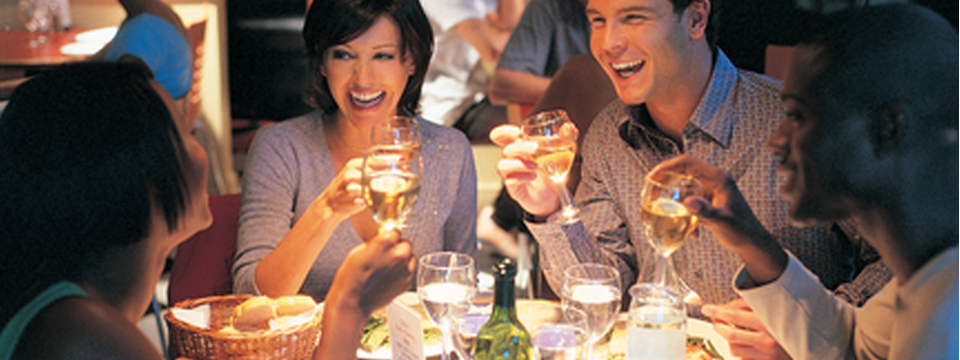

Our founder, Jaya, had an idea to create a restaurant that was more than a place that served great food. Charlie wanted to give locals a place where they'd always feel at home. A place where they could get no-nonsense food at down-to-earth prices, and where they'd be treated right by people who had a passion to serve. The culture at the Ninety Nine Restaurants was instilled by Charlie Doe long before a mission statement was ever written down on paper and is still evident today. At the Ninety Nine, guests, team members and community are all treated with respect.
Our inviting, comfortable dining room is the perfect place to enjoy a great meal. Or, grab a seat at our neighborhood pub-like bar—our community tables provide an energetic and lively atmosphere that is perfect for our famous Thursday Night Trivia. The Ninety Nine Restaurant & Pub is headquartered in Woburn, MA and is proud to serve more than 20 million guests a year in over 100 restaurants throughout the Northeast. We will continue to prosper and grow and will continue to take care of every guest who walks through our doors, just like we've always done. We treat people right, and that's what makes new guests feel welcome, and regulars feel right at home.